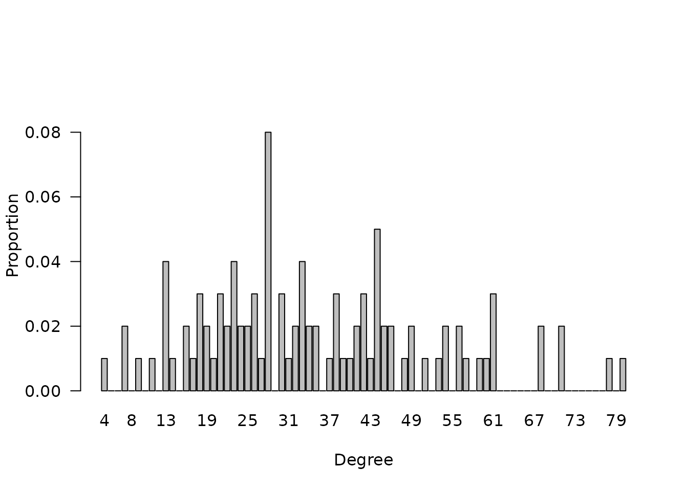
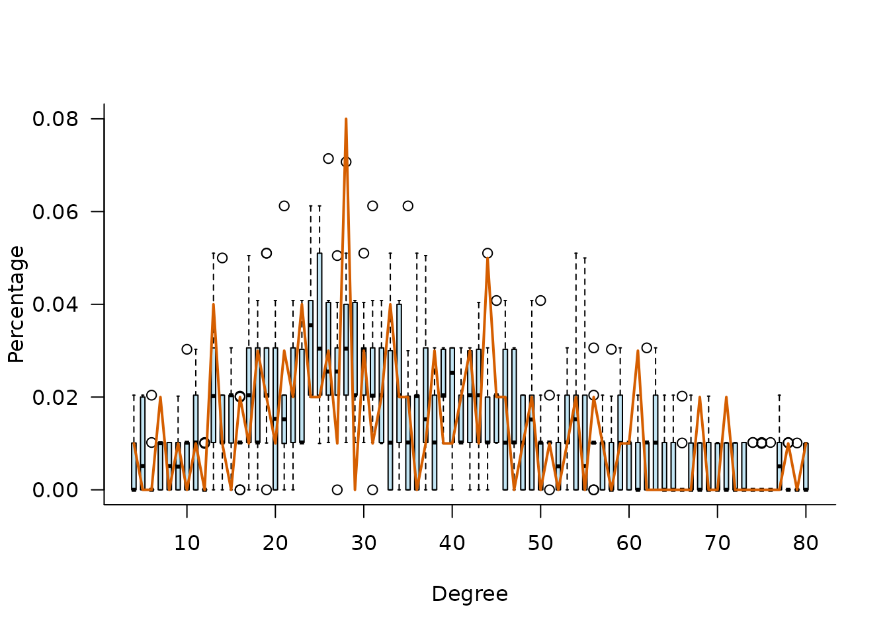
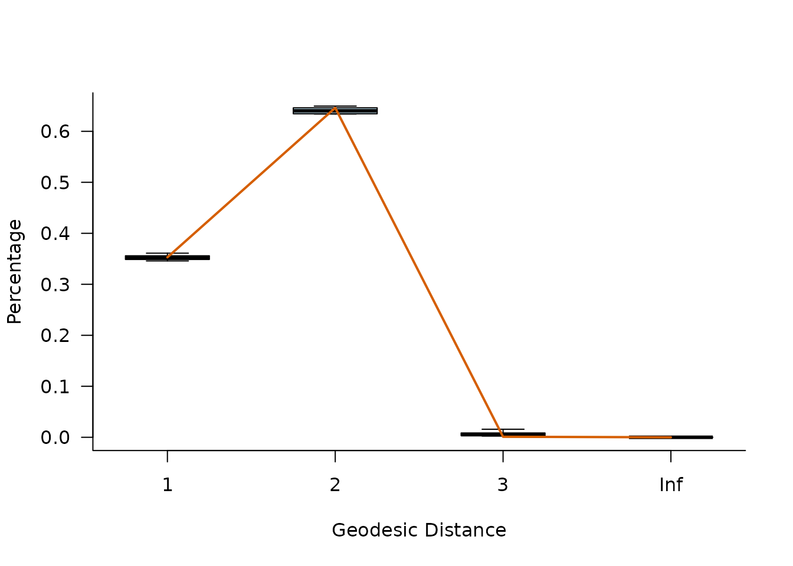
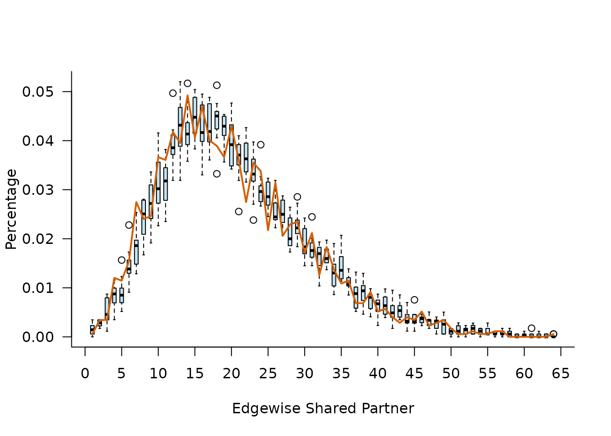
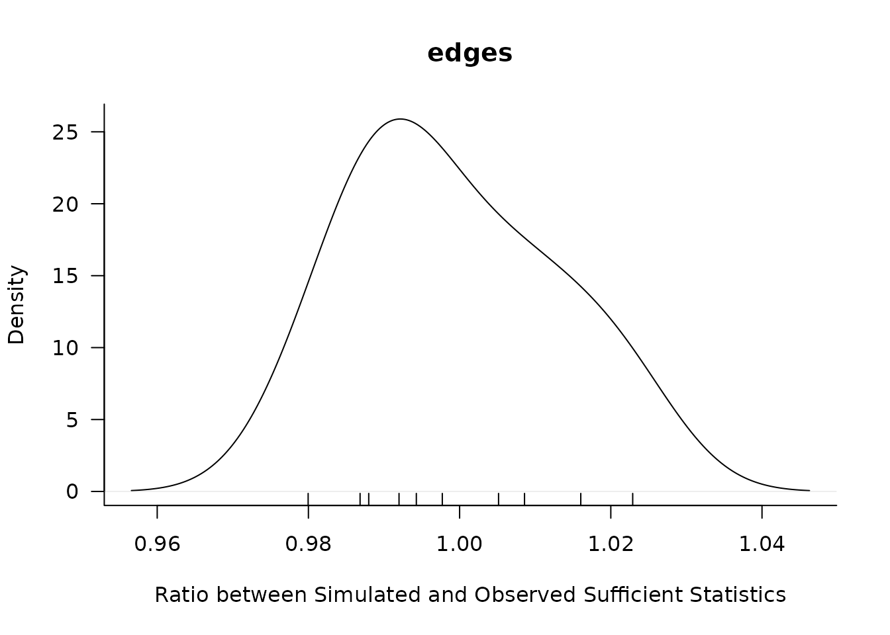
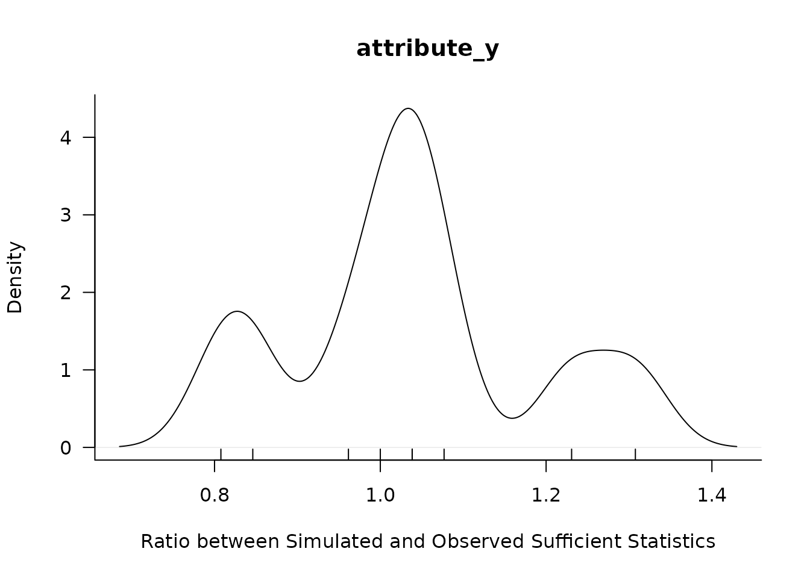
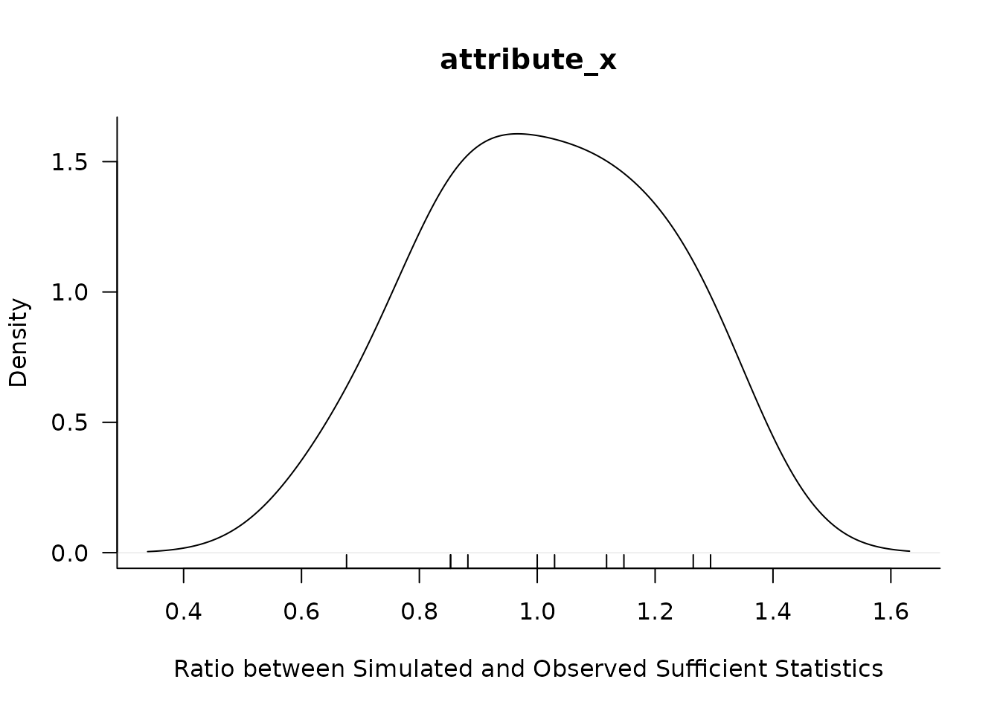

Joint Modeling of Networks and Attributes with iglm
iglm.RmdOverview
This vignette provides an introduction to the iglm
package, which is designed for estimating joint probability models that
incorporate network structures. The package allows users to analyze how
individual attributes and network connections jointly influence outcomes
of interest.
You can create a iglm object by specifying the network
structure and the attributes of interest. Here is a simple example:
n_actor <- 100
attribute_info <- rnorm(n_actor)
attribute_cov <- diag(attribute_info)
edge_cov <- outer(attribute_info, attribute_info, FUN = function(x, y) {
abs(x - y)
})
set.seed(123)
alpha <- 0.3
block <- matrix(nrow = 50, ncol = 50, data = 1)
neighborhood <- as.matrix(Matrix::bdiag(replicate(n_actor / 50, block, simplify = FALSE)))
overlapping_degree <- 0.5
neighborhood <- matrix(nrow = n_actor, ncol = n_actor, data = 0)
block <- matrix(nrow = 5, ncol = 5, data = 0)
size_neighborhood <- 5
size_overlap <- ceiling(size_neighborhood * overlapping_degree)
end <- floor((n_actor - size_neighborhood) / size_overlap)
for (i in 0:end) {
neighborhood[(1 + size_overlap * i):(size_neighborhood + size_overlap * i), (1 + size_overlap * i):(size_neighborhood + size_overlap * i)] <- 1
}
neighborhood[(n_actor - size_neighborhood + 1):(n_actor), (n_actor - size_neighborhood + 1):(n_actor)] <- 1
type_x <- "binomial"
type_y <- "binomial"
object <- iglm.data(neighborhood = neighborhood, directed = F, type_x = type_x, type_y = type_y, n_actor = n_actor)Model Specification
You can specify a model formula that includes various network statistics and attribute effects. For example:
formula <- object ~ edges + attribute_y + attribute_x + degreesTo fully define the model, you need to set up a sampler for the MCMC estimation and set all necessary parameters:
# Parameters of edges(mode = "local"), attribute_y, and attribute_x
gt_coef <- c(3, -1, -1)
# Parameters for degree effect
gt_coef_degrees <- c(rnorm(n = n_actor, -2, 1))
# Define the sampler
sampler_tmp <- sampler.iglm(
n_burn_in = 100, n_simulation = 10,
sampler_x = sampler.net.attr(n_proposals = n_actor * 10),
sampler_y = sampler.net.attr(n_proposals = n_actor * 10),
sampler_z = sampler.net.attr(n_proposals = sum(neighborhood > 0) * 10),
init_empty = F
)
model_tmp_new <- iglm(
formula = formula,
coef = gt_coef, coef_degrees = gt_coef_degrees, sampler = sampler_tmp,
control = control.iglm(accelerated = F, max_it = 200, display_progress = F)
)Model Simulation
Once you have specified a model, you can simulate new data based on the fitted parameters:
# Simulate new networks
model_tmp_new$simulate()
# Get the samples
tmp <- model_tmp_new$get_samples()Model Estimation
You can estimate the model parameters using the estimate
method:
# First set the first simulated network as the target for estimation
model_tmp_new$set_target(tmp[[1]])
model_tmp_new$estimate()
model_tmp_new$iglm.data$degree_distribution(plot = TRUE)
Model Assessment
After estimation, you can assess the model fit using various diagnostics:
model_tmp_new$assess(formula = ~ degree_distribution +
geodesic_distances_distribution + edgewise_shared_partner_distribution + mcmc_diagnostics)





model_tmp_new$results$plot(model_assessment = T)

